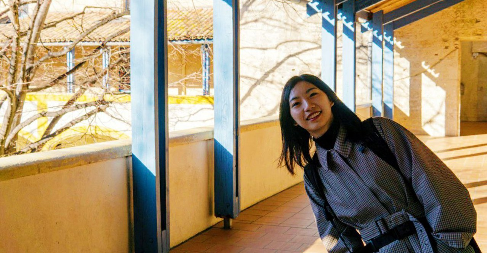

Ling Sun
Good design brings wonderful experience to users, and benefits commerce and more aspects in the world
I'm a creative UX designer, specializing in User Interface Design and Accessibility. I love challenging existing design concepts and pushing boundaries to explore new possibilities on digital products and services. I am passionate about UX/UI design, service design, and graphic design. I am also very interested in design topics such as web accessibility, haptics and collaborative interactions.

- - UX/UI Design
- - Usability Testing
- - Web Accessibility
- - Service Design
- - Business Analysis